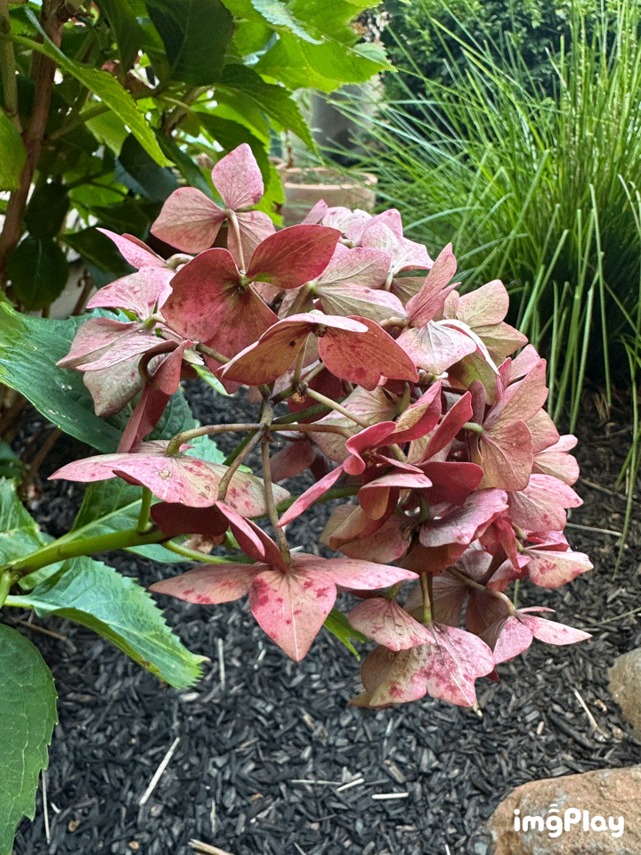

Part 1: Selfie: The Wrong Way vs. The Right Way
The second image looks much better than the first image because the zoom has a flattening effect on the subject that does not place as much focus on the center of the face compared to the first image.
The selfie is taken without zoom from closer up.
The selfie is taken with a 2x zoom from further away.
Subpart 2: Architectural Perspective Compression
Brief description of this subpart.

Explanation of image 1.

Explanation of image 2.
Part 3: The Dolly Zoom
The idea is to simultaneously move the camera back while also zooming in.

Elephant/Glasses Dolly Zoom.

Flower Dolly Zoom.